National Parks Travel Guide
The most populous city in the United States, described as the cultural, financial, and media capital of the world, significantly influencing commerce, entertainment, research, technology, education, politics, tourism, art, fashion, and sports, and is the most photographed city in the world


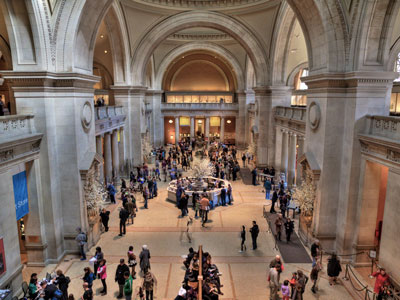
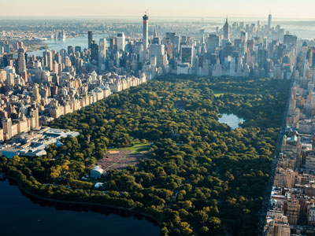
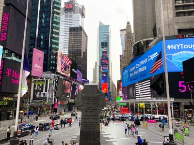
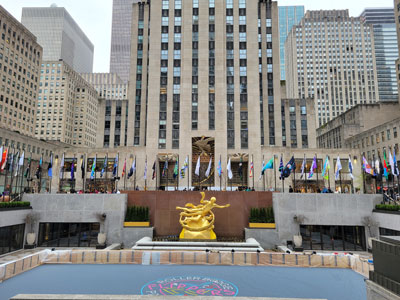
Colonial & Pre-Revolutionary Sites
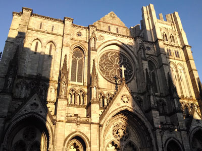
PortableNYCTours, CC BY-SA 4.0, via Wikimedia Commons; Image Size Adjusted
.jpg){kind=link}
Fort Raleigh National Historic Site
Manteo
Site of England's first attempted colonial settlements in North America, including the mysterious 'Lost Colony' of 1587.
Anthony Quintano from Hillsborough, NJ, United States, CC BY 2.0, via Wikimedia Commons; Image Size Adjusted
.jpg){kind=link}
North Carolina Historic Bath
Bath
North Carolina's oldest town, chartered in 1705, preserving colonial-era buildings along the Pamlico River.
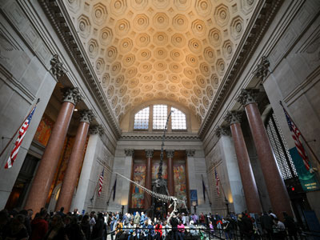
bryan..., CC BY-SA 2.0, via Wikimedia Commons; Image Size Adjusted
.jpg){kind=link}
Brunswick Town/Fort Anderson State Historic Site
Winnabow
Ruins of a colonial port town founded in 1726, later the site of a Civil War-era fort.
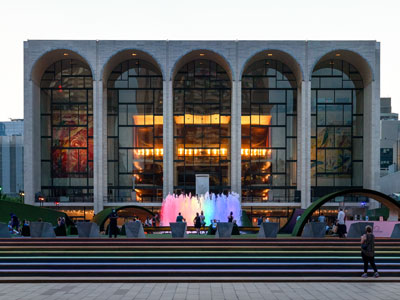
Rhododendrites, CC BY-SA 4.0, via Wikimedia Commons; Image Size Adjusted
.jpg){kind=link}
Jamestown
Jamestown
First permanent English settlement in North America, founded in 1607 on the banks of the James River.
.jpg){kind=link}
Colonial Williamsburg
Williamsburg
Restored 18th-century capital of colonial Virginia, featuring costumed interpreters and historic trade shops.
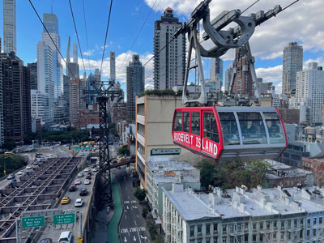
Jdforrester, CC BY 4.0, via Wikimedia Commons; Image Size Adjusted
{kind=link}
Yorktown
Yorktown
Founded in 1691 as a colonial tobacco port on the York River, later the site of the American Revolution's decisive battle.
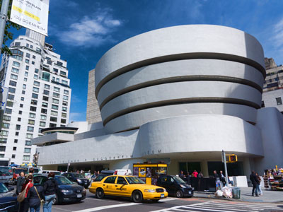
Jean-Christophe BENOIST, CC BY 3.0, via Wikimedia Commons; Image Size Adjusted
{kind=link}
Historic Shirley
Charles City
Virginia's oldest plantation, established in 1613 along the James River and still operated by the same family.

Ajay Suresh from New York, NY, USA, CC BY 2.0, via Wikimedia Commons; Image Size Adjusted
.jpg){kind=link}
Berkeley Plantation
Charles City
1619 plantation on the James River, birthplace of a U.S. president and site of the first official Thanksgiving in America.
-400.jpg)
ajay_suresh, CC BY 2.0, via Wikimedia Commons; Image Size Adjusted
.jpg){kind=link}
Historic St. Mary's City
St. Mary's City
Maryland's first colonial capital, founded in 1634, now an outdoor living-history museum with reconstructed 17th-century buildings.

Misterweiss at English Wikipedia, Public domain, via Wikimedia Commons; Image Size Adjusted
{kind=link}
Annapolis
Annapolis
Colonial capital of Maryland since 1694, known for its well-preserved 18th-century streetscape and brick architecture.

Hypnotoad78, CC BY-SA 4.0, via Wikimedia Commons; Image Size Adjusted
{kind=link}
Hammond-Harwood House
Annapolis
1774 Georgian mansion considered one of the finest examples of colonial American residential architecture.

Plymouth
Plymouth
Site of the Pilgrims' 1620 landing and the first permanent European settlement in New England.
_(51395759113)-400.jpg)
ajay_suresh, CC BY 2.0, via Wikimedia Commons; Image Size Adjusted
_(51395759113).jpg){kind=link}
Historic Deerfield
Deerfield
Museum village of preserved 18th-century houses along the same street settled by colonists in 1669.
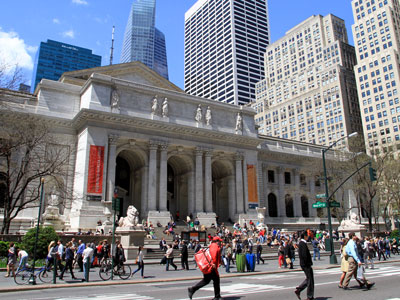
Ingfbruno, CC BY-SA 3.0, via Wikimedia Commons; Image Size Adjusted
.jpg){kind=link}
Paul Revere House
Boston
Boston's oldest remaining structure, built around 1680 and home to Paul Revere at the start of the American Revolution.
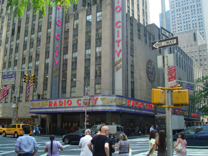
PumpkinSky, CC BY-SA 3.0, via Wikimedia Commons; Image Size Adjusted
{kind=link}
Old State House
Boston
Boston's oldest surviving public building, completed in 1713 and once the seat of colonial government.
Old North Church
Boston
Boston's oldest surviving church, built in 1723 and famed for its lantern signal on the eve of the Revolution.
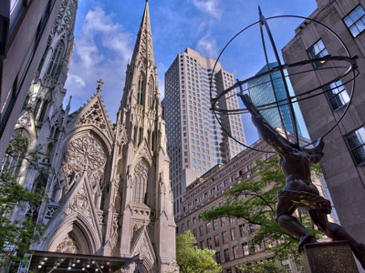
Jean-Christophe BENOIST, CC BY 3.0, via Wikimedia Commons; Image Size Adjusted
{kind=link}
Salem Maritime National Historic Site
Salem
Preserved colonial wharf and waterfront buildings tracing Salem's rise as a major trading port.
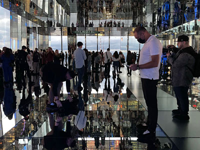
Saggittarius A, CC BY-SA 4.0, via Wikimedia Commons; Image Size Adjusted
{kind=link}
Strawbery Banke
Portsmouth
Outdoor history museum on New Hampshire's original 1630 settlement site, with homes spanning four centuries.
NBCUniversal, CC BY 3.0, via Wikimedia Commons; Image Size Adjusted
Jackson House
Portsmouth
Built around 1664, one of the oldest surviving wood-frame houses in northern New England.
Newport
Newport
Colonial seaport neighborhood with one of the largest concentrations of pre-Revolutionary buildings in the country.
Basil D Soufi, CC BY-SA 3.0, via Wikimedia Commons; Image Size Adjusted
.jpg){kind=link}
Touro Synagogue
Newport
Dedicated in 1763, the oldest surviving synagogue building in the United States.

MusikAnimal, CC BY-SA 4.0, via Wikimedia Commons; Image Size Adjusted
{kind=link}
Old Colony House
Newport
1739 statehouse where Rhode Island's colonial assembly met and the Declaration of Independence was later read to the public.

Mystic Seaport
Mystic
Living history seaport museum preserving New England's shipbuilding and maritime trade heritage dating back to the colonial era.

Sam valadi, CC BY 2.0, via Wikimedia Commons; Image Size Adjusted
{kind=link}
Old New-Gate Prison & Copper Mine
East Granby
Colonial-era copper mine dating to 1707, later converted into America’s first chartered state prison.

PortableNYCTours, CC BY-SA 4.0, via Wikimedia Commons; Image Size Adjusted
.jpg){kind=link}
Webb Deane Stevens Museum
Wethersfield
Three adjoining 18th-century homes where George Washington planned the Yorktown campaign in 1781.

Fraunces Tavern
New York City
Colonial tavern built in 1719, later the site where George Washington bade farewell to his officers.
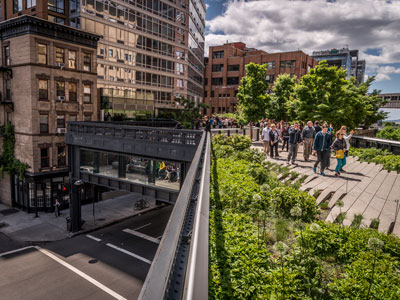
Jeff P from Berkeley, CA, USA, CC BY 2.0, via Wikimedia Commons; Image Size Adjusted
.jpg){kind=link}
Philipse Manor Hall State Historic Site
Yonkers
Manor house begun in the 1680s, seat of one of colonial New York's wealthiest landholding families.
Matias Garabedian from Montreal, Canada, CC BY-SA 2.0, via Wikimedia Commons; Image Size Adjusted
.jpg){kind=link}
Van Cortlandt House Museum
Bronx
Built in 1748, the oldest surviving building in the Bronx and a former Continental Army headquarters.
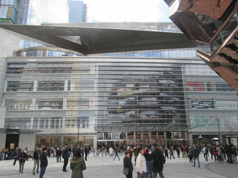
Epicgenius, CC BY-SA 4.0, via Wikimedia Commons; Image Size Adjusted
{kind=link}
Historic Huguenot Street
New Paltz
Collection of stone houses built by French Huguenot settlers beginning in the late 1600s, among the oldest streets in America.
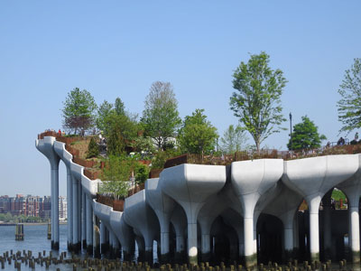
Jim.henderson, CC BY 4.0, via Wikimedia Commons; Image Size Adjusted
_jeh.jpg){kind=link}
East Jersey Old Town Village
Piscataway
Recreated colonial village of relocated and reconstructed 18th-century buildings depicting early New Jersey life.
Proprietary House
Perth Amboy
1762 mansion built as the residence of New Jersey's royal governors, the last such colonial governor's mansion still standing.
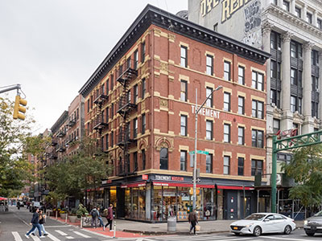
ajay_suresh, CC BY 2.0, via Wikimedia Commons; Image Size Adjusted
.jpg){kind=link}
Old Barracks Museum
Trenton
1758 military barracks that later served as a rallying point after Washington's crossing of the Delaware.
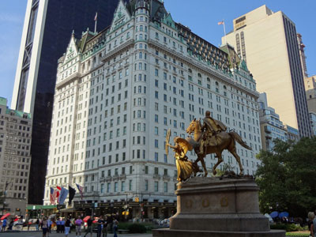
Alan Light, CC BY 2.0, via Wikimedia Commons; Image Size Adjusted
.jpg){kind=link}
Independence National Historical Park
Philadelphia
Home to Independence Hall, where the Declaration of Independence and U.S. Constitution were both debated and signed.
Historic Ephrata Cloister
Ephrata
1732 religious commune of medieval-style buildings founded by German Pietist settlers.
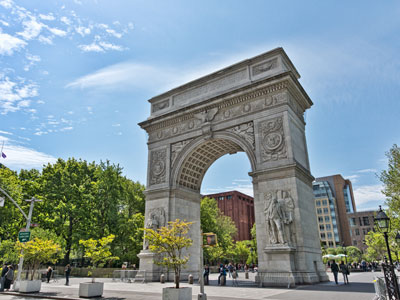
Jean-Christophe BENOIST, CC BY 3.0, via Wikimedia Commons; Image Size Adjusted
{kind=link}
Gloria Dei Old Swedes Episcopal Church
Philadelphia
Built in 1700 by Swedish settlers, Philadelphia's oldest surviving church.

Jeff P from Berkeley, CA, USA, CC BY 2.0, via Wikimedia Commons; Image Size Adjusted
Pennsbury Manor
Morrisville
Reconstructed riverside estate of William Penn, founder of the Pennsylvania colony.

New Castle Historical Society
New Castle
Preserves the history of New Castle, Delaware's colonial capital and one of the best-preserved colonial towns on the East Coast.

New Castle Court House Museum
New Castle
Delaware's oldest surviving public building and colonial seat of government, dating to 1732.

Charleston
Charleston
Founded in 1670, one of colonial America’s wealthiest port cities, with streets lined by 18th-century townhouses.

Middleton Place
Charleston
1741 plantation with America's oldest landscaped gardens, once home to a signer of the Declaration of Independence.

Drayton Hall
Charleston
Completed in 1738, the oldest unrestored plantation house in America still open to the public.

Savannah
Savannah
Georgia’s colonial capital, founded in 1733 and laid out around a distinctive grid of shaded public squares.

Jim.henderson, Public domain, via Wikimedia Commons; Image Size Adjusted
{kind=link}
Wormsloe Historic Site
Savannah
Ruins of a fortified 1740s tabby house built by an original Georgia colonist, reached by an oak-lined avenue.

Momos, CC BY-SA 3.0, via Wikimedia Commons; Image Size Adjusted
{kind=link}
Old Fort Jackson
Savannah
Georgia's oldest standing fort, built on the site of a colonial-era river battery guarding Savannah.
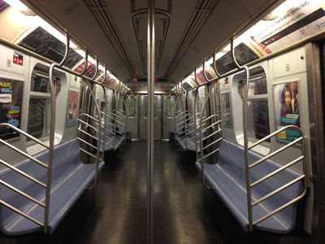
Gh9449, CC BY-SA 4.0, via Wikimedia Commons; Image Size Adjusted
{kind=link}
St Augustine
St. Augustine
Founded by the Spanish in 1565, the oldest continuously occupied European-established city in the United States.
Andy C, CC BY-SA 3.0, via Wikimedia Commons; Image Size Adjusted
{kind=link}
Fort Mose Historic State Park
St. Augustine
Site of the first legally sanctioned free Black settlement in what is now the United States, established in 1738.
Armando Olivo Martín del Campo, CC BY-SA 4.0, via Wikimedia Commons; Image Size Adjusted
{kind=link}
Colonial Pemaquid State Historic Site
Bristol
Archaeological site of one of the earliest English settlements on the Maine coast, active by the early 1600s.
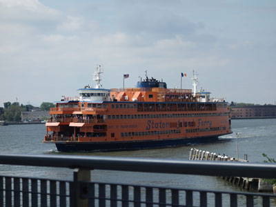
Tdorante10, CC BY-SA 4.0, via Wikimedia Commons; Image Size Adjusted
_22_-_Staten_Island_Ferry.jpg){kind=link}
Old York Historical Society
York
Museum complex of preserved colonial buildings in York, one of Maine's oldest English settlements.
Other US Colonial / Pre-Revolution Locations
- Tryon Palace — New Bern
- Alamance Battleground State Historic Site — Burlington
- Henricus Historical Park — Chester
- George Washingtons Mount Vernon — Mount Vernon
- Monticello — Charlottesville
- Historic St Johns Church — Richmond
- Alexandria Historical District — Alexandria
- Gadsbys Tavern Museum — Alexandria
- Stabler Leadbeater Apothecary Museum — Alexandria
- Thoroughgood House — Virginia Beach
- St Pauls Episcopal Church — Norfolk
- Williamsburg — Williamsburg
- William And Mary — Williamsburg
- Historic Sotterley — Hollywood
- Fort Frederick State Park — Big Pool
- William Paca House And Garden — Annapolis
- Maryland State House — Annapolis
- St Annes Parish — Annapolis
- St Johns College — Annapolis
- Museum Of Historic Annapolis — Annapolis
- Schifferstadt Architectural Museum — Frederick
- Adams National Historical Park — Quincy
- Longfellow House Washingtons Headquarters National Historic Site — Cambridge
- Faneuil Hall — Boston
- Old South Meeting House — Boston
- Kings Chapel — Boston
- Kings Chapel Burying Ground — Boston
- Granary Burying Ground — Boston
- Copps Hill Burying Ground — Boston
- Old Corner Bookstore — Boston
- Boston Latin School — Boston
- Witch House — Salem
- Salem Witch Museum — Salem
- Salem — Salem
- Plimoth Plantation — Plymouth
- Mayflower II — Plymouth
- Plymouth Rock — Plymouth
- Pilgrim Hall Museum — Plymouth
- Jabez Howland House — Plymouth
- Plimoth Grist Mill — Plymouth
- Coles Hill — Plymouth
- Burial Hill — Plymouth
- Sandwich — Sandwich
- Town Hall Square Historic District — Sandwich
- Concord — Concord
- Lexington Battle Green — Lexington
- Minute Man National Historical Park — Concord
- Portsmouth — Portsmouth
- Odiorne Point State Park — Rye
- First Baptist Church In America — Providence
- Roger Williams National Memorial — Providence
- Providence — Providence
- Trinity Church — Newport
- Newport Tower — Newport
- Wanton Lyman Hazard House — Newport
- Hunter House — Newport
- Vernon House — Newport
- Museum Of Newport History — Newport
- New Haven Green — New Haven
- Yale University — New Haven
- Fort Ticonderoga — Ticonderoga
- Fort William Henry — Lake George
- Fort Stanwix National Monument — Rome
- Bowling Green — New York City
- Federal Hall — New York City
- Trinity Church — New York City
- Elfreths Alley — Philadelphia
- Christ Church Philadelphia — Philadelphia
- Christ Church Burial Ground — Philadelphia
- Betsy Ross House — Philadelphia
- Fort Mifflin — Philadelphia
- Fort Pitt Museum — Pittsburgh
- Fort Duquesne — Pittsburgh
- Fort Necessity National Battlefield — Farmington
- Historic Bethlehem Museums And Sites — Bethlehem
- Landis Valley Village And Farm Museum — Lancaster
- John Dickinson Plantation — Dover
- First State National Historic Park — Dover / New Castle
- Charles Towne Landing State Historic Site — Charleston
- Old Exchange And Provost Dungeon — Charleston
- Magnolia Plantation And Gardens — Charleston
- Boone Hall Plantation And Gardens — Mount Pleasant
- St Philips Church — Charleston
- Circular Congregational Church — Charleston
- French Huguenot Church — Charleston
- Charles Pinckney National Historic Site — Mount Pleasant
- Ninety Six National Historic Site — Ninety Six
- Fort King George State Historic Site — Darien
- Fort Frederica National Monument — St. Simons Island
- Colonial Park Cemetery — Savannah
- Olde Pink House — Savannah
- Squares Of Savannah — Savannah
- St Simons Island — St. Simons Island
- Fort Caroline National Memorial — Jacksonville
- Fort Matanzas National Monument — St. Augustine
- Mission Nombre De Dios Museum — St. Augustine
- Cathedral Basilica Of St Augustine — St. Augustine
- Plaza De La Constitucion — St. Augustine
- Oldest Wooden School House — St. Augustine
- Cubo Line — St. Augustine
- Governors House — St. Augustine
- Pensacola Historic District — Pensacola
- De Soto National Memorial — Bradenton
Overview
The American Colonial and Pre-Revolutionary era represents the formative period of United States history, spanning from the establishment of the first European settlements in the early seventeenth century through the years leading up to the American Revolution. During this time, colonies founded by English, Dutch, Spanish, French, and Swedish settlers developed along the Atlantic coast and beyond, creating diverse communities shaped by trade, agriculture, religion, and cultural exchange. Colonial towns, forts, missions, plantations, and trading centers laid the foundations for many of the institutions, economies, and traditions that would later influence the creation of the United States.
As the colonies grew, tensions gradually emerged between colonial governments and the British Crown over issues of taxation, representation, trade restrictions, and self-governance. Events such as the French and Indian War, the Stamp Act, the Boston Tea Party, and the First Continental Congress helped shape the political climate that eventually led to the American Revolution. The ideas of liberty, representative government, and individual rights that developed during this era would profoundly influence the Declaration of Independence and the founding principles of the nation. Colonial-era communities also witnessed important interactions among Indigenous peoples, European settlers, and enslaved Africans, creating a complex and often challenging historical legacy.
Today, visitors can explore many preserved colonial and pre-Revolutionary sites throughout the United States. Notable destinations include Colonial National Historical Park in Virginia, Independence National Historical Park in Pennsylvania, Salem Maritime National Historical Park in Massachusetts, Fort Raleigh National Historic Site in North Carolina, Jamestown National Historic Site in Virginia, San Juan National Historic Site in Puerto Rico, and numerous historic villages, churches, forts, and battlefields that help bring early American history to life. Through restored buildings, archaeological sites, living-history demonstrations, museums, and preserved landscapes, these locations offer valuable opportunities to experience the people, events, and ideas that shaped America before independence.
This article uses material from National Park Service resources and historical reference materials relating to Colonial and Pre-Revolutionary America and the preservation of significant early American historical sites.
{kind=link}
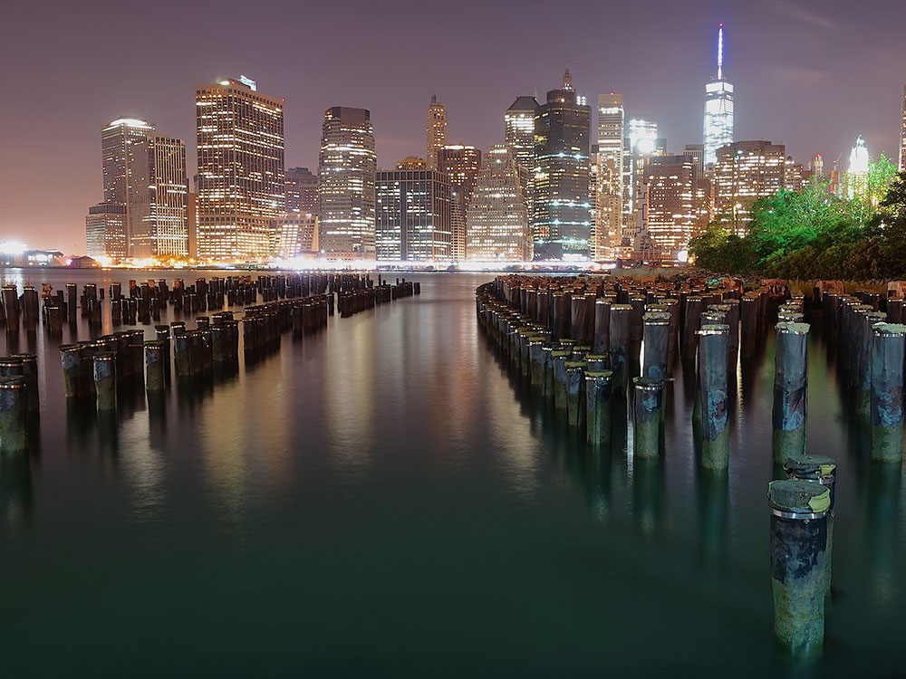
{kind=link}
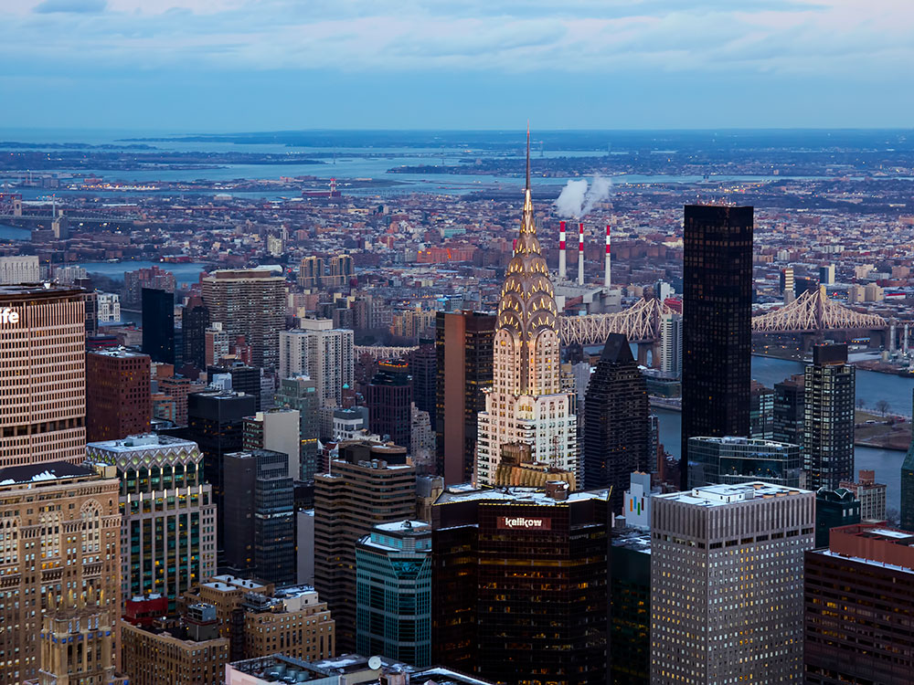